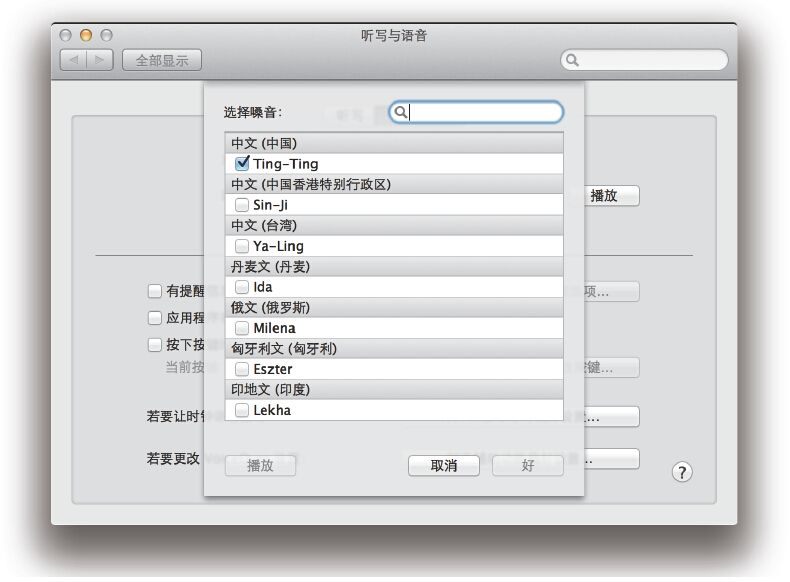
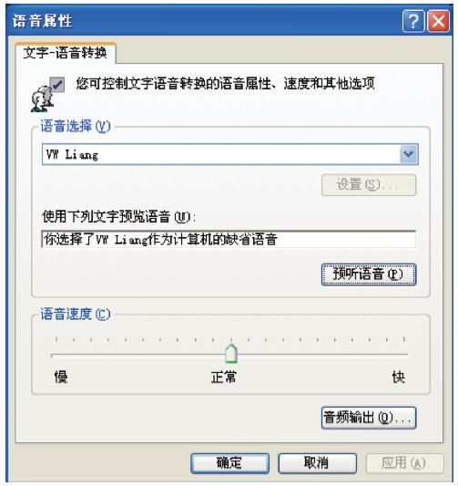
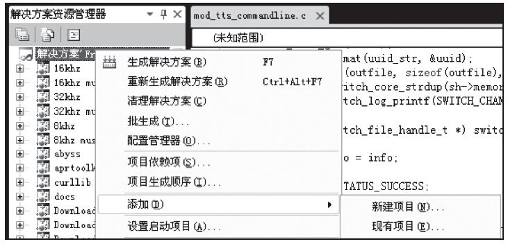

11.7 TTS
TTS（Text To Speech）是将文本转换成语音的一项技术，因而又称为语音合成（Synthesis）。下面我们来看一下FreeSWITCH中TTS的用法。
11.7.1 使用mod_flite
mod_flite [1] 是FreeSWITCH基于Flite [2] 语音合成引擎的一个TTS模块。目前，该模块仅支持英文。不过，我们可以先拿它来做个实验，学习一下FreeSWITCH中TTS的用法。
首先，到FreeSWITCH源代码目录中使用下列命令编译安装TTS模块：
# make mod_flite-install
然后，到FreeSWITCH中加载TTS模块：
freeswitch> load mod_flite
加载TTS模块后，就可以使用speak App来调用它了。我们先来试一下以下命令：
originate user/1000 &speak('flite|kal|Hello, Welcome to FreeSWITCH')
上述命令呼叫1000，并执行speak。其中speak的参数是使用竖线隔开的。第一个参数flite表示TTS引擎的名字；第二个参数kal表示一种嗓音（Voice），一般是一个人名。mod_flite目前支持awb、kal、rms、slt四种嗓音。执行上述命令，在分机1000振铃并接听后，将可以听到“Hello,Welcome to FreeSWITCH”。
我们也可以做以下Dialplan进行上述测试：
<extension name="TTS">
<condition field="destination_number" expression="^1234$">
<action application="answer"/>
<action application="speak" data="flite|rms|Hello, Welcome to FreeSWITCH"/>
</condition>
</extension>
配置好上述Dialplan后，拨打1234，也能听到同样的声音。
除了在speak的参数中指定TTS引擎和嗓音参数外，也可以通过通道变量指定。如下列配置与上述Dialplan是等价的（我们在11.6.1节也讲过这种等待关系）：
<action application="set" data="tts_engine=flite"/>
<action application="set" data="tts_voice=kal"/>
<action application="speak" data="Hello, Welcome to FreeSWITCH"/>
11.7.2 mod_tts_commandline
许多TTS软件都有命令行版本，可以使用命令行来执行TTS功能。mod_tts_commandline模块可以调用这些命令，生成一个声音文件，进而播放这个声音文件，从而达到利用其他TTS软件执行TTS功能的目的。
1.使用Mac上的TTS功能
在笔者使用的Mac系统上，有一个内置的say命令可以播放TTS，如在命令行上执行如下命令便可以听到声音：
$ say Hello, Welcom to FreeSWITCH
下列命令可以将TTS语音合成的结果保存到声音文件（hello.aiff）中，以便后续可以用其他播放软件播放：
$ say -o /tmp/hello.aiff Hello, Welcom to FreeSWITCH
注意，这里的声音文件我们使用了AIFF格式，因为该命令不支持WAV格式的文件。我们可以使用sox软件包 [3] 中的play命令来播放该文件，如：
$ play /tmp/hello.aiff
也可以使用sox将其转换为WAV格式，如：
$ sox /tmp/hello.aiff /tmp/hello.wav
使用系统提供的TTS引擎的好处就是它一般比较容易支持更多的语种，例如，我们可以在Mac上增加中文语音的支持。Mac系统默认不带中文的语音库，不过，可以自行安装。安装步骤是：打开“系统偏好”，依次选择“听写与语音”、“文本至语音”，在系统嗓音中选择自定义，就可以选择嗓音为“Ting-Ting”的声音了，如图11-1所示，选择完毕后它会自动安装。

图11-1 在Mac中安装中文TTS语音支持
在安装完中文支持并将默认的嗓音选为“Ting-Ting”后，就可以使用下列命令让它说中文了：
$ say
欢迎使用FreeSWITCH
当然，如果“Ting-Ting”不是默认的嗓音，也可以在say命令后使用“-v”指定使用的噪音，如：
$ say -v Ting-Ting
欢迎使用FreeSWITCH
在准备好中文的TTS引擎后，我们下一步就编译安装mod_tts_commandline模块，进入FreeSWITCH的源代码目录，执行如下命令：
# make mod_tts_commandline-install
安装完毕后，我们修改tts_commandline模块的配置文件，将settings部分修改为如下形式：
<settings>
<param name="command" value="say -v ${voice} -o ${file}.aiff ${text}; sox ${file}.aiff ${file}; rm -f ${file}.aiff"/>
</settings>
其中，FreeSWITCH在调用该模块时会自动设置这几个变量：voice为嗓音的名字；file为声音文件的名字；text为TTS文本；rate为Channel的采样率。我们通过FreeSWITCH传过来的参数生成一个命令（command），该命令实际上由3个以分号分开的命令组成。第1个命令调用操作系统提供的say，以便从FreeSWITCH传过来的文本（text）产生一个声音文件（$file）。需要指出，该模块默认的扩展名是.wav，而Mac上的Say并不支持.wav格式的声音文件，所以，我们先生成一个.aiff文件，然后在第2条命令中使用sox将该.aiff文件转换为.wav格式的文件，并在第3条命令中使用rm将原先的.aiff删除（FreeSWITCH在使用完毕后会自动删除.wav文件）。
然后到FreeSWITCH中加载该模块：
freeswitch> load mod_tts_commandline
接着，就可以用如下的Dialplan让FreeSWITCH说中文了（注意，为了支持中文，Dialplan的配置文件应该使用UTF-8编码）：
<extension name="TTS">
<condition field="destination_number" expression="^1234$">
<action application="answer"/>
<action application="set" data="tts_engine=tts_commandline"/>
<action application="set" data="tts_voice=Ting-Ting"/>
<action application="speak" data="
欢迎使用FreeSWITCH"/>
</condition>
</extension>
2.使用Windows平台上的TTS功能
在Windows平台上，也可以使用Microsoft提供的TTS API来使用TTS功能。
首先，建立以下VBS脚本，存放到一个目录下，如C:\src\say.vbs。该脚本的内容如下：
set spvoice = CreateObject("SAPI.SpVoice")
set spfilestream = CreateObject("SAPI.SpFileStream")
set args = Wscript.Arguments
wavfile = Replace(args(0), "/", "\")
text = args(1)
Wscript.echo wavfile
spfilestream.open wavfile, 3
set spvoice.AudioOutputStream = spfilestream
spvoice.Speak text
spfilestream.close
该脚本首先使用CreateObject创建一个SAPI的语音对象spvoice，然后创建一个文件对象spfilestream，该文件对象将打开一个声音文件准备写入，接下来把spvoice的音频输出（AudioOutputStream）指定为该文件对象，最后调用spvoice的Speak方法进行TTS转换，并把结果写入声音文件中。
我们可以先在命令行中进行实验，如：
C:\src> cscript say.vbs test.wav
欢迎使用FreeSWITCH
上述命令将产生声音文件test.wav，我们可以双击该文件听一下内容是否正确。如果听不到中文，那么很可能是没有安装支持中文的语音包。可以选择“开始”菜单→“控制面板”→“语音”项核实一下。如果在弹出的窗口的“语音选择”栏中只有“Microsoft Sam”一项可供选择，那表示没有中文的语音支持，需要单独安装。笔者测试时使用的是Neospeech提供的语音库（见图11-2），另外，据说Microsoft Office中也有中文语音库的支持。如何在Windows上安装中文的语音支持超出了本书的范围，读者可以自行查阅相关资料。

图11-2 在Windows上选择一个中文语音
如果一切正常，接下来就是配置conf\autoload_configs\tts_commandline.conf.xml文件了，将其中的command参数配置为如下形式：
<param name="command" value="cscript c:\src\say.vbs ${file} ${text}"/>
在Windows上，该模块默认也是不编译的，甚至没有一个VC的工程文件。如果要编译该模块，我们需要自己生成一个工程文件。在Windows上生成一个工程文件的步骤比在UNIX类平台上要复杂一些。但对于熟悉VC的人来说，生成一个工程文件应该不是很难。在此，我们还是找一个简单的方法。步骤如下：
1）找一个差不多的工程文件复制过来，然后稍做修改。笔者使用的是VS2010 Express版，因而将application\mod_fsv目录中的mod_fsv.2010.vcxproj工程文件复制到asr_tts\mod_tts_commandline目录中，并改名为mod_tts_commandline.2010.vcxproj。接着，用记事本或其他文本编辑器打开该文件，将所有的mod_fsv替换为mod_tts_commandline就完成了。
2）打开FreeSWITCH的Solution文件Freeswitch.2010.express.sln，如图11-3所示，右击“解决方案资源管理器”，在弹出的快捷菜单中选择“解决方案Freeswitch.2.10...”，依次选择“添加”→“现有项目”，在弹出的窗口中找到我们刚刚建立的mod_tts_commandline.2010.vcxproj，然后单击“确定”按钮就可以将该工程文件加入解决方案了。接着在“解决方案资源管理器”中找到“mod_tts_commandline”一项，右击，然后在弹出的快捷菜单中选择“生成（U）”命令编译该模块。

图11-3 将mod_tts_commandline工程加入解决方案
编译完毕后就可以在FreeSWITCH中加载该模块了。剩余的步骤与在Mac上的操作是类似的，读者可以自己练习一下。
3.使用Linux上的TTS功能
在Linux上，也有支持中文的TTS实现，不过笔者没有详细测试过。当然，如果读者运行的FreeSWITCH具有Internet环境，也可以使用Google Translate提供的API自己写一个脚本来与mod_tts_commandline集成。这部分内容留给读者自行练习，在此就不多介绍了。我们将在11.7.4节介绍Google Translate。
11.7.3 MRCP
MRCP（Media Resource Control Protocol） [4] 是一个支持访问网络上的媒体资源的协议。它的典型应用就是TTS和ASR（自动语音识别）。MRCP协议有两个版本，其中，v1 [5] 版使用RTSP协议进行媒体资源的协商，v2 [6] 版则使用SIP协议（这是我们看到的SIP协议的另外一个用处）。UniMRCP [7] 是MRCP协议的一个开源实现，它支持v1和v2两个版本。
mod_unimrcp [8] 是在UniMRCP基础上在FreeSWITCH中实现的一个模块，它同时支持TTS和ASR。一般来说，主流的TTS和ASR产品都支持MRCP协议。这类产品专业性比较强，一般都是商业版的软件。在写作本书时，没有找到合适的商业软件作为例子，因而在此就不对具体模块的对接配置做过多介绍了。不过，我们将在17.8.2节讲一个使用MRCP进行语音识别的例子，感兴趣的读者也可以参考相关的配置（配置方法都是类似的）。
如果使用UniMRCP，在Dialplan中TTS引擎的写法是“unimrcp:”加上配置文件中配置项的名字，如：
<action application="set" data="tts_engine=unimrcp:tts_server1"/>
其他的语法都与我们前面讲的类似，在此就不再赘述了。
11.7.4 Google Translate
Google提供了一些优秀的工具，Google Translate（即谷歌翻译）就是其中之一。笔者在研究过程中偶然发现Google Translate有一个很酷的TTS功能。
在浏览器中访问以下URL [9] 就可以播放“Hello and welcome to FreeSWITCH”了：
http://translate.google.com/translate_tts?q=Hello+and+welcome+to+FreeSWITCH&tl=en
若要播放中文也很简单，只需要将en改成zh（代表中文），URL如下：
http://translate.google.com/translate_tts?q=
欢迎使用FreeSWITCH&tl=zh
在上面的测试中，读的中文没问题，只是似乎把英文也按中文的习惯来读了，听起来很不习惯 [10] 。我们后面再解决这个问题。
为了在FreeSWITCH中使用该功能，我们需要一个命令行版本的API。如下列命令可以使用Google Translate把文字变成MP3声音文件：
curl -A "Mozilla" -o google_tts.mp3
"http://translate.google.com/translate_tts?tl=zh&ie=UTF8&q=%e6%ac%a2%e8%bf%8e%e4%bd%bf%e7%94%a8FreeSWITCH"
其中，我们使用了curl命令行工具，它是一个HTTP客户端。-A指定的是客户端使用的User Agent，Google好像不喜欢curl，因此这里我们使用Mozilla替代；-o指定的是输出的文件，这里输出到一个MP3文件；最后是要访问的URL，我们已经将中文用url_encode进行编码了（注意，与浏览器中的URL相比，本URL中多了个ie=UTF8参数，它指定输入文本的编码类型，这里我们使用UTF-8）。
以下的wget命令与上面的命令是等价的，读者可以自己对比相关参数的含义。
wget -A "Mozilla" -o google_tts.mp3 "http://translate.google.com/translate_tts?tl=zh&q=%e6%ac%a2%e8%bf%8e%e4%bd%bf%e7%94%a8FreeSWITCH&ie=UTF-8"
理论上，有了上述命令行以后，我们就可以编写一个脚本，用11.7节讲到的方法通过mod_tts_commandline来使用Google Translate的TTS功能了。当然，读者也可以自己试一下，我们在这里就不重复该方法了。下面，我们讲两种更简便的方法。
首先，加载mod_shout，以让FreeSWITCH支持MP3。然后，使用如下的Dialplan就可以了：
<extension name="Free_Google_Text_To_Speech">
<condition field="destination_number" expression="^1234$">
<action application="answer" data=""/>
<action application="playback"
data="shout://translate.google.com/translate_tts?&tl=zh&ie=UTF-8&q=
欢迎使用+FreeSWITCH"/>
</condition>
</extension>
呼叫1234就应该可以听到测试的声音了。前面，我们在URL中没有使用“http://”，而是使用了“shout://”。shout代表SHOUTcast [11] 协议，它是专门用于流媒体广播的，Google Translate和FreeSWITCH中的mod_shout就直接支持该协议，因此我们可以直接使用它，以获得最好的效果。
上面我们提到，Google Translate用中文方式读的英语不好听，这里我们要解决一下。目前看来，最简单也是最有效的办法就是将它拆成中文和英文分别读，具体如下：
<action application="playback"
data="shout://translate.google.com/translate_tts?&tl=zh&ie=UTF-8&q=
欢迎使用"/>
<action application="playback"
data="shout://translate.google.com/translate_tts?&tl=en&q=FreeSWITCH"/>
当然，实际上shout也是FreeSWITCH实现的一个文件接口（File Interface）。除此之外，也可以使用mod_httapi提供的HTTP文件接口来解决上述问题，如（我们省略了较长的URL）：
<action application="playback" data="http://translate.google.com/translate_tts?...
或者试一下mod_vlc中提供的HTTP文件接口：
<action application="playback" data="vlc/http://translate.google.com/translate_tts?...
总之，不管以何种方式调用这些API，殊途同归，最后都使用这些API生成我们需要的声音文件（或数据），并播放出来。
11.7.5 TTS小结
FreeSWITCH支持比较丰富的TTS功能，也能很容易地与大部分TTS产品进行集成，而且它使用起来也比录音文件灵活。那么，什么情况下该使用TTS，什么情况下使用录音呢？
坦白地说，这其实不是个技术问题，也没有标准答案，不过在两者之间进行选择时，我们可以考虑以下几个问题：
·如果在开发或测试时，使用TTS会比较简单，因为文本内容也比录音文件直观。
·即使再好的TTS产品，它的发音也像机器的发音，永远不如真人录音好听。
·如果录音的人不懂得录音的技巧，录出来反而可能不专业，不好听。
·如果语音提示需要经常改动，那最好用TTS，因为TTS改起来会比较方便。更重要的是，它能保持统一的嗓音；而使用真人录音，可能找不到原先录音的那个人了。
·TTS产品还是比较有技术含量的（如分词断句、多音字等），所以一般来说好的TTS产品都比较贵。
当然，具体问题具体分析。熟练掌握了这些知识，相信大家在真正使用时都能做出正确的选择。就笔者的经验来看，在系统上配置好TTS后，以后写IVR之类的应用程序就比较简单了。因为直接使用TTS，可以避免先录音，也不用确定录音文件名与实际内容的对应关系等，而且在IVR脚本或程序中直接嵌入文件内容，代码看起来也比文件名要直观得多，这样可以减少错误的发生。等到全部IVR应用都写好了以后，可以再选择是否使用商业的TTS软件（也许能增强朗读效果），或者找专业的人员录音实现。在本书后面的例子中，我们在需要声音文件的地方大部分都将使用TTS为例来进行讲解。
[1] 参见http://wiki.freeswitch.org/wiki/Mod_flite。
[2] Flite是Festival-Lite的缩写。Festival是爱丁堡大学研究出的一款开源语音合成引擎，致力于支持多语言及多平台。而Flite相当于Festival的简易版，致力于运行在小的嵌入式系统上。详见http://www.festvox.org/flite/。
[3] sox（Sound eXchange）是一个跨平台的音频处理工具。该命令不是内置的，需要单独安装。参见：http://en.wikipedia.org/wiki/SoX。
[4] 参见http://en.wikipedia.org/wiki/Media_Resource_Control_Protocol。
[5] 参见http://tools.ietf.org/html/rfc4463。
[6] 参见http://tools.ietf.org/html/rfc6787。
[7] 参见http://www.unimrcp.org/。
[8] 参见http://wiki.freeswitch.org/wiki/Mod_unimrcp。
[9] 其中的URL字符串都是经过url_encode编码的，不熟悉的读者可以参考一下http://zh.wikipedia.org/wiki/百分号编码。另外，这里有一个站长工具可以帮助进行这种编码或反编码（解码），参见http://tool.chinaz.com/Tools/URLEncode.aspx。
[10] 或许这也是Google可爱的地方。如它把“FreeSWITCH”读成类似“埃弗啊夷塔八六埃四意吃”。当然，自己试一下就知道了。网上也有好多调侃（或者说调戏）Google Translate的段子。
[11] SHOUTcast是一个流媒体的广播协议，参见http://en.wikipedia.org/wiki/SHOUTcast。